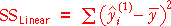
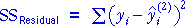
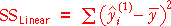
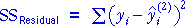

|  | Describes how much linear trend is in the data. |
| Describes how much curvature is in the data. | |
|  | Describes how far the data lie from the best quadratic curve — the unexplained variation. |
Component sums of squares for the quadratic model
The three components of the total sum of squares reflect different aspects of the data set.
|  | Describes how much linear trend is in the data. |
| Describes how much curvature is in the data. | |
|  | Describes how far the data lie from the best quadratic curve — the unexplained variation. |
In particular, the quadratic sum of squares holds information about the curvature in the data.
Illustration
The scatterplot on the left below shows an artificial data set. The jittered dot plots on the right show the different components — click on any plot to display these components on the scatterplot.
The two sliders alter the data set, keeping the total sum of squares unchanged.